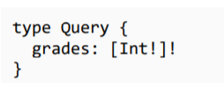

while writing the typedefs set type of the query to simple [ ]. This tells graph QL that an array will be returned here like this

Quering an array from playground
Arrays (Custom Type Data)
Here we basically pass our custom data type to typeDefs array as we expect only data of that certain type
This is how the resolver function would look like
Query Would look something like this
Now this is where Graph QL is magical, It allows users to get only the data like they want
In this example we are filtering the API response based on the query passed